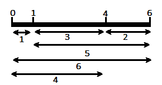
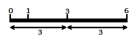

Golomb ruler problem
Brief description
A golomb ruler is a set of integer 0=a1<a2<a3<a4<….<an such that each differences between two ak are unique.
For examples, this is a golomb ruler:
We can see that every differences are unique, rather than in this ruler where 0-3 and 3-6 both equal 3.
The size of a golomb ruler is equal to an, the greatest number of the ruler. The goal is to find the smallest golomb ruler given the number n of integer.
CFN model
We create N variables, one for each integer ak. Because we cannnot create an AllDifferent function with differences of variable, we also create a variable for each difference and create hard ternary function in order to fix them equal to the difference.
Because we do not put absolute value when creating the hard function, it will force the variable ak by increasing order.
Then we create one variable AllDifferent with all the differences and one soft function on the an variable in order to minize the size of the ruler.
Python model solver
The following code using python3 interpreter will solve the golomb ruler problem with the first argument being the number of integer n (e.g. “python3 Golomb.py 8”).
import sys
import pytoulbar2
N = int(sys.argv[1])
top = N**2 + 1
Problem = pytoulbar2.CFN(top)
#Create a variable for each square
for i in range(N):
Problem.AddVariable('X' + str(i), range(N**2))
#binary soft constraints for overlapping sqaures
for i in range(N):
for j in range(i+1, N):
Problem.AddVariable('X' + str(i) + '-X' + str(j), range(N**2))
Constraint = []
for k in range(N**2):
for l in range(N**2):
for m in range(N**2):
if l-k == m:
Constraint.append(0)
else:
Constraint.append(top)
Problem.AddFunction(['X' + str(i), 'X' + str(j), 'X' + str(i) + '-X' + str(j)], Constraint)
Problem.AddAllDifferent(['X' + str(i) + '-X' + str(j) for i in range(N) for j in range(i+1,N)])
Problem.AddFunction(['X' + str(N-1)], range(N**2))
#Problem.Dump('SquareSoft.cfn')
res = Problem.Solve(showSolutions =3)